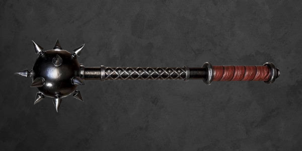

Estoque de itens no arsenal da Ordem
Esta página é utilizada para gerenciar o estoque de armamentos e itens operacionais da OR-57, assim como para tirar dúvidas sobre como indicar ou cadastrar uma arma ou item.
Cadastramento de armas e itens
Todo agente deve possuir suas armas e itens cadastrados em suas fichas para que seja possível ter um controle do nosso arsenal, caso um item ou arma de um agente seja um item trazido por ele, cabe ao agente responsável por montar suas fichas cadastrá-los de acordo com nossas normas.
Como cadastrar um item ou arma?
Uma série de fatores devem ser analisados, se for um item, deve se certificar se ele se encaixa em alguma das categorias criadas para abrir itens de agentes, sendo elas: kit de perícia, utensílio e vestimenta. Caso o item não se encaixa em nenhuma delas, é necessário compará-lo com itens já existentes em nosso cadastro e fazer um novo cadastro.
Se for uma arma, muitos outros fatores devem ser levados em conta, armas de fogo em um geral são bem servidas, sendo separadas por classe e não por modelo, por exemplo, dentro da categoria "Fuzil de Assalto", diversos modelos estão inclusos, porém, caso a arma seja muito específica, é necessário realizar um novo cadastro, deve ser analisado o tipo de dano que ela causa, se possui alguma melhoria ou maldição, o tipo de munição que ela usa (caso utilize) e buscar parâmetros já existentes para definir sua categoria.
Armas e itens pessoais dos agentes não são retidos na Ordem, caso o agente venha falecer apenas é inteirado ao nosso estoque se fosse da vontade dele, itens adquiridos via nossa loja devem ser utilizados apenas durante missões, ficando retidos em nosso estoque caso o agente passe um longo período inativo.
Armamentos
Abaixo estão listadas todas as informações de armamentos disponíveis, nomes, descrições, categorias, tipos de danos e quantidade em estoque, acompanhadas de fotos para exemplificar, eles serão separados de acordo com seus tipos, armas brancas, de disparo, de fogo e pesadas. Além disso, em suas descrições terão dicas de quando recomendar essas armas e suas utilidades.
Para informações sobre preço atual, realização de modificações ou maldições, consulte os respectivos especialistas em nossa base.
Armas Brancas
| Imagem | Nome | Descrição | Categoria | Tipo de dano | Quantidade |
|---|---|---|---|---|---|
| Faca | Uma excelente arma para combate corpo a corpo, mas não apenas isso, também é uma ótima ferramenta para investigação, quase todo agente carrega uma consigo. | 0 | Corte | 33 | |
| Punhal | Diferente da faca, que é mais versátil, o punhal é mais focado apenas no combate, muito indicado devido ao seu tipo de ataque, que perfura o alvo. É o queridinho dos ocultistas. |
0 | Perfuração | 30 | |
| Bastão | Não é indicado como arma primária, mas é uma excelente secundária, caso a primária venha a falhar, ou não seja para combate corpo a corpo, o bastão dará conta do recado. | 0 | Impacto | 20 | |
| Machete | Muito indicada para missões em que é necessário realizar incursões em mata fechada, nessas ocasiões, a machete será extremamente útil para abrir trilhas e cuidar de pequenos imprevistos. | 0 | Corte | 13 | |
| Lança | A escolha da lança diz muito mais sobre o agente do que sobre a finalidade em si, geralmente é escolhida por agentes com origem ou apresso pela cultura indigena. | 0 | Perfuração | 10 | |
| Cajado | Nada mais é do que um bastão comprido, por ser manipulado com as duas mãos, permite que o impacto seja mais forte, já o tornando interessante para o combate corpo a corpo. | 0 | Impacto | 6 | |
| Machadinha | Uma excelente ferramenta para ser combinada com um um Kit de sobrevivência, altamente recomendada para missões em que é necessário passar diversos dias na mata. | 0 | Corte | 12 | |
| Nunchaku | Uma arma extremamente forte se usada com as técnicas corretas, muito indicada para agentes que são versados em artes marciais como Taekwondo. OBS: Não recomendo essa arma desde o incidente em que a agente Letícia me perseguiu por toda a base com um desses na mão.(foi traumático) |
0 | Impacto | 5 | |
| Corrente | Não recomendamos a indicação dela para combate, uma vez que é de difícil utilização, caso o agente insista, é interessante combinar ela com lâminas na ponta ou outros adereços. | 0 | Impacto | 3 | |
| Espada | Uma arma excelente arma para combate corpo a corpo, amplamente usada pelos combatentes que seguem esse ramo. | I | Corte | 15 | |
| Florete | Pode ser interessante seu uso por conta de seu dano perfurante, mas é difícilmente escolhida por algum combatente, sendo mais recomendada para alguém que tenha prática em esgrima. | I | Corte | 2 | |
| Machado | Uma arma extremamente cortante, sendo excelente para combate e em demais situações, como cortar árvores ou derrubar portas. | I | Corte | 13 | |
|  | Maça | Uma arma que possui um dos ataques mais brutais da lista, sendo capaz de quebrar ossos com apenas um golpe, porém é necessário uma certa força para utilizá-la em seu potêncial máximo. | I | Impacto | 7 |
 |
Acha | Uma versão maior e mais letal do machado, sendo originalmente utilizada para cortar árvores largas, servindo para cortar criaturas de maneira igualmente boa.
Há quem diga que ela têm certa similaridade com manoplas (vai entender). |
I | Corte | 4 |
| Gadanho | Uma grande foice de duas mãos projetada para ceifar cereais, não demorou muito para perceberem que ela poderia ceifar outras coisas... | I | Corte | 3 | |
| Katana | Sem dúvida uma das armas mais utilizadas por combatentes corpo a corpo, diferente da espada padrão, é necessário ter um certo nível técnico para ser capaz de utilizar uma katana corretamente. | I | Corte | 14 | |
| Marreta | A marreta e outras ferramentas de construção cívil, podem ser usadas tanto para destruir obstáculos, tanto para destuir inimigos. | I | Impacto | 9 | |
| Montante | Uma enorme espada medindo em média 1,5m, têm um golpe extremamente demolidor, mesmo que não corte muito, seu impacto certamente causará danos. Deve-se ter muita técnica e força para combater com uma dessas. | I | Corte | 5 | |
| Motoserra | Uma das armas mais brutais usadas, dilacera completamente o alvo, também causando danos de sangramento. | I | Corte | 11 |
Armas de Disparo
| Imagem | Nome | Descrição | Categoria | Tipo de dano | Quantidade |
|---|---|---|---|---|---|
 |
Arco Simples | Uma arma silenciosa mas de difícil utilização, é necessário um conhecimento básico em disparo com arco para seu uso. | 0 | Perfuração | 14 |
 |
Arco Composto | Mais aprimorado que o arco simples, mas também muito mais difícil de se utilizar, é necessário um profundo conhecimento e prática com arcos para utilizá-lo | I | Perfuração | 7 |
| Besta | Uma versão mais básica da balestra, seu uso é simples e não é necessário muito conhecimento para conseguir utilizá-la | 0 | Perfuração | 12 | |
| Balestra | Diferente da besta, seu funcionamento é bem mais complexo, sendo necessário um treinamento prévio para disparar de forma precisa com a balestra. | I | Perfuração | 5 |
Armas de Fogo
| Imagem | Nome | Descrição | Categoria | Tipo de dano | Quantidade |
|---|---|---|---|---|---|
| Pistola | Possui uma boa capacidade de munição e cadência de tiro, mas é necessário um pouco de técnica para utilizá-la | I | Balístico | 27 | |
| Revólver | Altamente recomendado para todos os agentes, possui uma menor capacidade de munição, porém uma mecânica muito mais simples, jamais irá deixar um combatente na mão. | I | Balístico | 33 | |
| Fuzil de caça | Um meio termo entre a submetralhadora e o fuzil de assalto, recomendado para agentes que não têm proficiência em armas táticas. | I | Balístico | 7 | |
| Submetralhadora | Abrange diversos modelos, por ser uma arma leve, pode se utilizar mais de uma ao mesmo tempo (dependendo do modelo), muito recomendada por ser leve e ágil. | I | Balístico | 21 | |
| Espingarda | Compensa sua falta de precisão a longo alcance com um enorme poder de fogo. Apenas um disparo é capaz de destroçar o alvo. | I | Balístico | 17 | |
| Fuzil de assalto | Sem dúvida a arma mais utilizada por equipes de varredura, extremante indicado para lidar com alvos humanos e paranormais, possui um enorme poder de fogo, contantando também com um modo rajada. | II | Balístico | 15 | |
| Fuzil de precisão | É a arma com o disparo mais preciso e letal de todos, é necessário um intenso treinamento para conseguir utilizá-la com maestria. Apenas um disparo é capaz de neutralizar alvos. Muito indicada para missões envolvendo reféns. | III | Balístico | 6 |
Armas Pesadas
| Imagem | Nome | Descrição | Categoria | Tipo de dano | Quantidade |
|---|---|---|---|---|---|
| Bazuca | Um armamento de uso extremamente situacional e muito letal, é preciso proficiência em armas pesadas para operá-lo, além de um excelente planejamento. | III | Impacto | 3 | |
 |
Lança Chamas | Muito recomendado para lidar com criaturas de Morte, também sendo usado para limpar locais inteiros contaminados por esse elemento, é necessário treinamento e cuidado para utilizá-lo | III | Incendiário | 5 |
| Metralhadora | Uma arma com um intenso poder de fogo, realizando muitos disparos por segundo, pode ser operada até por dois combatentes ao mesmo tempo. | II | Balístico | 7 |
Equipamentos
Nessa sessão estarão listados todos os equipamentos disponíveis e suas respectivas informações, nessa categoria também se encaixam itens paranormais, munições e proteções.
Para cadastrar um novo item, reforçar proteções e abastecer munições, dirija-se a nossa loja de armas na OR-57.
Munições
| Imagem | Nome | Descrição | Categoria | Tipo de dano | Quantidade |
|---|---|---|---|---|---|
| Munição Curta | Munições usadas em armas curtas (revólveres, pistolas e submetralhadoras). Disponível em diversos calibres (.38, .357, 9mm, 40mm...). Já conta com os carregadores inclusos. |
0 | Balístico | 513 | |
 |
Munição Longa | Munições usadas em armas longas (fuzis de caça, assalto e precisão). Disponível em diversos calibres (7.62, 5.56, .300, .308). Já conta com os carregadores inclusos. |
I | Balístico | 398 |
| Cartucho | Munições usadas em espingardas (cartucheira, repetição, shotgun...). Disponível em diversos calibres (12, 16, 20, 28...). Já conta com os carregadores inclusos. |
I | Balístico | 426 | |
| Flechas | Um pacote de flechas que podem ser utilizadas em arcos e outras armas de disparo. Disponível em diversas pesagens (420G, 720G, 1000g...) Não possuí aljava incluída. |
0 | Perfuração | 213 | |
| Combustível | Um recipiente com gás ou líquido inflamável, utilizado para abastecer um lança-chamas. |
I | Incendiário | 31 | |
| Foguete | Um projétil que explode ao entrar em contato com algo sólido, pode ser lançado por uma bazuca ou modelo similar. |
I | Impacto | 25 | |
| Caixa de dardos | Uma caixa com dois dardos tranquilizantes, servem de munição para uma pistola de dardos. |
0 | Sonífero | 16 | |
| Caixa de sinalizadores | Uma caixa contendo duas cargas para uma pistola sinalizadora. |
0 | Incendiário | 45 |
Proteções
| Imagem | Nome | Descrição | Categoria | Tipo de proteção | Quantidade |
|---|---|---|---|---|---|
| Proteção Leve | Tudo aquilo que pode proteger um agente contra ataques básicos, nessa categoria estão inclusos itens como coletes de kevlar, jaquetas de couro ou qualquer outro que cumpra a mesma função. Disponível para distribuição em nosso estoque contamos apenas com coletes de kevlar, itens pessoais de agentes devem ser registrados separadamente. |
I | Diversas | 47 | |
| Proteção Pesada | Um kit completo composto por equipamentos militares como: Capacete, ombreiras, joelheiras, caneleiras e um colete com várias camadas de Kevlar. Fornece proteção completa para um combatente, altamente recomendado para esquadrões de varredura. |
II | Diversas | 23 | |
| Escudo | Um escudo pesado que fornece uma boa proteção, excelente para incursões em locais fechados, permitindo uma equipe avançar diversos metros sem que seus membros sejam atingidos. Escudos no estilo medieval também são incluídos nesse tópico, apesar dos nossos serem modernos e normalmente utilizados por tropas de choque. |
I | Diversas | 15 |
Explosivos
| Imagem | Nome | Descrição | Categoria | Tipo de dano | Quantidade |
|---|---|---|---|---|---|
| Granada de atordoamento | Também conhecidas como granadas de efeito moral ou luz e som, são utilizadas para abalar a moral do inimigo, afetando seus sentidos o deixando temporariamente surdo e com a visão ofuscada. | 0 | Moral | 72 | |
| Granada de fragmentação | A mais letal entre as granadas, ao ser arremessada explode e espalha diversos fragmentos perfurantes que causam sérios danos a quem estiver no alcance dela. É necessário que o agente tenha uma boa pontaria para utilizá-las (já tivemos diversos acidentes envolvendo elas). |
I | Perfurante | 45 | |
| Granada de fumaça | Produz uma fumaça espessa e escura tornando impossível enxergar através dela. Apesar de ser muito útil contra alvos humanos, seu uso contra criaturas não é nada recomendado, uma vez que elas não enxergam nosso mundo através da visão, mas sim de outras formas, o que torna o uso da fumaça apenas prejudicial aos agentes. |
0 | Visual | 67 | |
 |
Granada incendiária | Ao explodir espalha labaredas de fogo causando fortes queimaduras e deixando em chamas todos os alvos na área que explodiu.. Coquetéis molotovs também são incluídos como granadas incendiárias, mesmo sendo fabricados de forma artesanal. |
I | Incendiário | 29 |
| Mina antipessoal | Excelente para armar emboscadas ou fazer armadilhas, podem ser ativadas por controles remotos e ao explodirem lançam centenas de bolas de aço que perfuram todos os alvos ao seu redor. | I | Perfurante | 16 |
Acessórios
| Imagem | Nome | Descrição | Categoria | Tipo de uso | Quantidade |
|---|---|---|---|---|---|
| Kit de perícia | Um conjunto de ferramentas que ajudam o agente em alguma atividade específica, em estoque temos kits médicos, caixas de ferramentas, mas em geral os agentes costumam ter seus próprios kits. |
0 | Investigativo | 12 | |
| Utensílio | Um item comum que auxilia o agente em uma atividade específica, como por exemplo: canivetes, notebooks e entre outros. Alguns itens em nossa loja se enquadram nesse tópico mas em sua maioria, eles pertencem aos próprios agentes. |
I | Investigativo | 17 | |
| Vestimenta | Uma peça do vestuário do agente que fornece a ele um bônus em alguma atividade específica, por exemplo: tênis de corrida (atletismo), terno (diplomacia). Esses itens devem ser avaliados e registrados de maneira minuciosa. |
I | Diversos | 6 |
Itens Operacionais
| Imagem | Nome | Descrição | Categoria | Tipo de uso | Quantidade |
|---|---|---|---|---|---|
| Algemas | Um par de algemas de aço muito utilizadas para prender e facilitar o transporte de prisioneiros feitos em missões. Sempre é recomendado ter ao menos um par delas por equipe. |
0 | Investigativo | 27 | |
| Arpéu | Um gancho de aço amarrado na ponta de uma corda utilizado para facilitar a escalada em muros, janelas e entre outros... Um excelente equipamento para missões de infiltração e espionagem. |
0 | Movimentação | 5 | |
| Bandoleira | Um cinto com bolsos e alças usado para tornar mais fácil o acesso a itens em uma situação de urgência, diminuindo o tempo para sacar uma arma, componentes de rituais e entre outros. Sem dúvida um dos equipamentos mais pedidos por agentes. |
I | Diversos | 53 | |
| Binóculos | Binóculos militares que permitem enxergar a longas distâncias, muito útil para monitorar alvos sem ser detectado. |
0 | Investigativo | 24 | |
| Bloqueador de sinal | Um pequeno dispositivo que emite ondas capazes de "poluir" as frequências de rádio utilizadas por celulares e outros aparelhos eletrônicos. |
I | Investigativo | 17 | |
| Cicatrizante | Um spray que contém um medicamento com forte poder cicatrizante, muito útil para minimizar a gravidade de feridas durante combates, permitindo ao agente continuar por mais tempo combatendo antes de precisar realizar tratamentos definitivos. |
I | Curativo | 112 | |
| Corda | Por padrão as cordas são distribuídas em rolos com 10 metros de comprimento, é um equipamento muito versátil podendo ser utilizado para diversas aplicações, desde amarrar um inimigo a até descer de altitudes elevadas. |
0 | Diversos | 1.550 metros | |
| Equipamento de sobrevivência | Um kit de sobrevivência completo contendo saco de dormir, panelas, GPS e outros itens úteis para permanecer por longos períodos em florestas. |
0 | Investigativo | 19 | |
| Lanterna tática | Uma lanterna com uma iluminação tão potente que é capaz de ofuscar temporariamente a visão de um alvo. |
I | Investigativo | 34 | |
| Máscara de gás | Uma máscara equipada com filtros para purificar o ar, muito útil para permitir que o agente resista a efeitos que podem afetar sua respiração. |
0 | Diversos | 24 | |
| Mochila militar | Uma excelente opção para conseguir carregar seus itens de maneira mais eficiente, uma vez que essa mochila foi projetada para organizá-los da melhor forma possível, contendo diversos bolsos e compartimentos extras. Itens como coldres, cartucheiras e outros pertencentes que tenham a mesma finalidade também se encaixam neste tópico. |
I | Orgazinação | 27 | |
| Óculos de visão térmica | Estes óculos permitem enxergar assinaturas de calor, permitindo que o agente localize inimigos camuflados ou até mesmo ocultos por efeitos de granadas de fumaça. |
I | Investigativo | 12 | |
| Pé de cabra | Esse equipamento torna mais fácil arrombar portas e também pode ser usado em um combate corpo a corpo como se fosse um bastão. |
0 | Diversos | 41 | |
| Pistola de dardos | Esta arma dispara dardos tranquilizantes compostos por um poderoso sonífero que é capaz de deixar um alvo inconsciente segundos após atingi-lo. É muito eficiente para neutralizar cães de guarda sem precisar usar força letal ou até mesmo capturar alvos importantes com vida. Já vem com dois dardos inclusos. |
I | Combativo | 22 | |
| Pistola sinalizadora | Dispara um sinalizador luminoso muito útil para destacar sua localização, além disso, também pode ser usada em combate sendo muito eficaz contra criaturas de Morte, uma vez que seu disparo causa fortes queimaduras. Já vem com duas cargas inclusas. |
0 | Emergencial | 14 | |
| Soqueira | Também conhecido como soco inglês, esta peça de metal é capaz de aumentar os danos que podem ser causados por um soco. |
0 | Combativo | 46 | |
| Spray de pimenta | Dispara um composto químico que causa dor e faz o alvo lacrimejar, o que o deixa temporariamente cego. |
I | Combativo | 36 | |
| Taser | É capaz de eletrocutar um alvo o deixando atordoado ou até mesmo incapacitado dependendo da voltagem do choque. |
I | Combativo | 32 | |
 |
Traje hazmat | Uma roupa impermeável que pode ser usada para impedir o contato com materiais tóxicos, concedendo ao agente resistência contra efeitos ambientais e químicos |
I | Diversos | 7 |
Itens Paranormais
| Imagem | Nome | Descrição | Categoria | Tipo de uso | Quantidade |
|---|---|---|---|---|---|
| Amarras elementais | Munições usadas em armas curtas (revólveres, pistolas e submetralhadoras). Disponível em diversos calibres (.38, .357, 9mm, 40mm...). Já conta com os carregadores inclusos. |
II | Combativo | 12 | |
| Câmera de aura paranormal | Munições usadas em armas curtas (revólveres, pistolas e submetralhadoras). Disponível em diversos calibres (.38, .357, 9mm, 40mm...). Já conta com os carregadores inclusos. |
II | Investigativo | 4 | |
| Componentes ritualísticos | Munições usadas em armas curtas (revólveres, pistolas e submetralhadoras). Disponível em diversos calibres (.38, .357, 9mm, 40mm...). Já conta com os carregadores inclusos. |
0 | Combativo | 218 | |
| Emissor de pulsos paranormais | Munições usadas em armas curtas (revólveres, pistolas e submetralhadoras). Disponível em diversos calibres (.38, .357, 9mm, 40mm...). Já conta com os carregadores inclusos. |
II | Investigativo | 2 | |
 |
Escuta de ruídos paranormais | Munições usadas em armas curtas (revólveres, pistolas e submetralhadoras). Disponível em diversos calibres (.38, .357, 9mm, 40mm...). Já conta com os carregadores inclusos. |
II | Investigativo | 3 |
| Medidor de estabilidade da Membrana | Munições usadas em armas curtas (revólveres, pistolas e submetralhadoras). Disponível em diversos calibres (.38, .357, 9mm, 40mm...). Já conta com os carregadores inclusos. |
II | Investigativo | 8 | |
| Scanner de manifestação paranormal | Munições usadas em armas curtas (revólveres, pistolas e submetralhadoras). Disponível em diversos calibres (.38, .357, 9mm, 40mm...). Já conta com os carregadores inclusos. |
II | Investigativo | 5 |